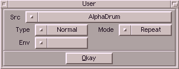

Dieser Modulator erlaubt es einen anderen Samplepuffer als Steuerungsquelle
zu benutzen. Dabei gibt es folgende Typen :
| Variante | Beschreibung |
|---|
| Normal | Wenn die Amplitude des Modulationspuffers ihr negatives
Maximum erreicht hat, entspricht das dem Wert 0.0 und beim
positiven Maximum wird 1.0 zurückgegeben. |
| Abs | Analog zu "Normal" 0.0 wird hier mit dem absoluten Betrag des
Samplepuffers gearbeitet. Somit ergibt ein Samplewert auf der
Nulllinie einen Rückgabewert von 0 und eine Maximum (+ oder -)
eine 1.0. |
| AmpEnv | Dieses Shape gibt die Lautstärkehüllkurve des modulierenden
Samples zurück (Stellen Sie sich vor sie spannen einen
Gummifaden über das Sample). |
| FrqEnv | Dieses Shape gibt die Frequenzhüllkurve des modulierenden
Samples zurück. |
Für AmpEnv und FrqEnv werden eventuell mal unterschiedliche Algorithmen zur Verfügung stehen.
Diese können sie dann über das Cycle-Gadget "Env" auswälen.
Die Samplepuffer, die zur Modulation benutzt werden, können ja durchaus eine
andere Länge als das Ergebnissample haben. Wie der Modulationspuffer bezüglich
seiner Länge interpretiert wird, kann man wie folgt entscheiden :
| Variante | Beschreibung |
|---|
| Single | Falls das Sample kürzer ist, wird der Rest mit Leerraum
aufgefüllt. |
| Repeat | Falls das Sample kürzer ist, wird es so oft wiederholt, wie
es benötigt wird. |
| Stretch | Das Sample wird auf die benötigte Länge gedehnt oder gestaucht. |
|